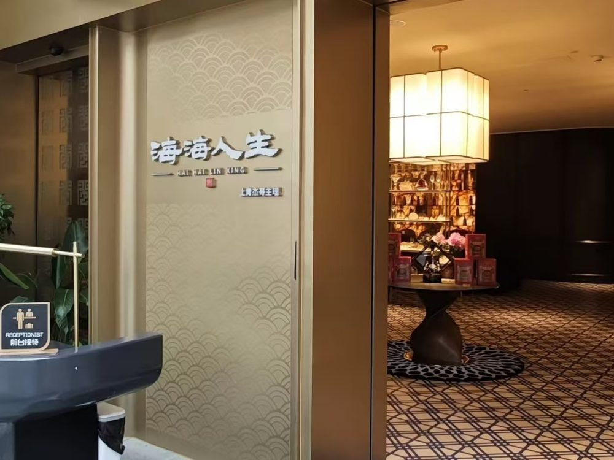
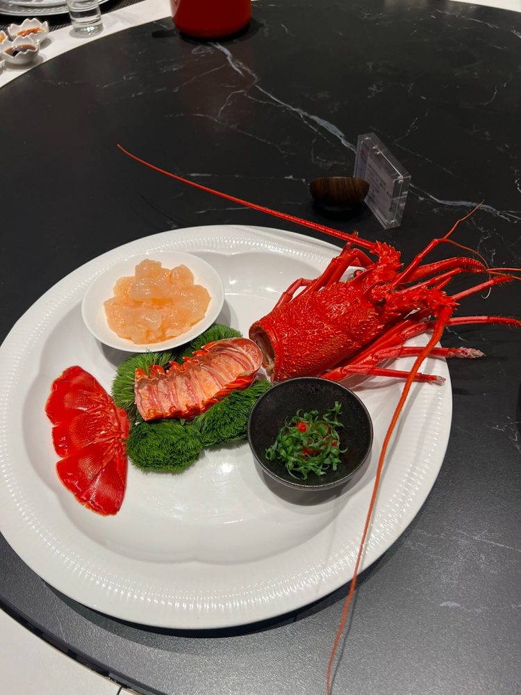
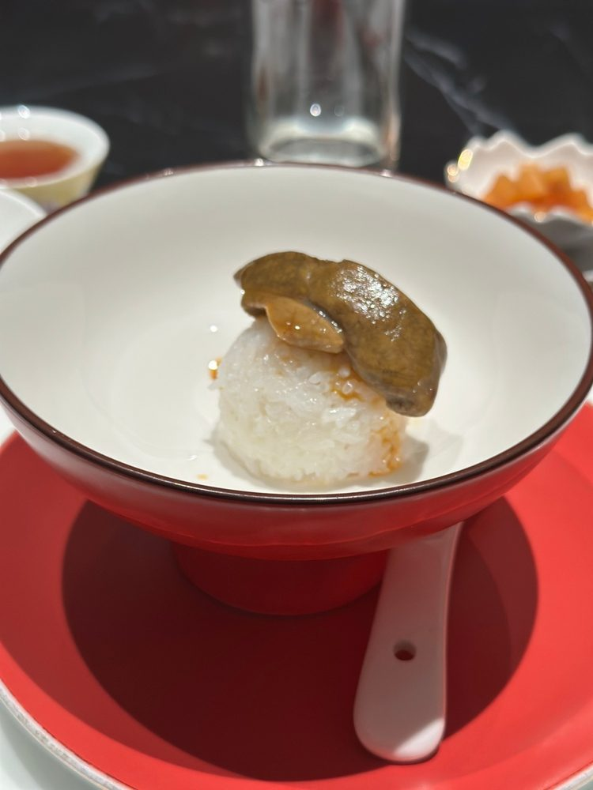

行程手册Travel Handbook
厦门自由行Xiamen Getaway
3晚4天 · 2026年8月24日 – 8月27日3 Nights 4 Days · Aug 24 – Aug 27, 2026
👆
绿色按钮是地图，全部走高德，手机装了高德会直接开 App。四家餐厅备选收在最后一节。标「⚠ 需查证」的时间出发前再确认一次。
Green buttons are maps — all Amap links, which open the Amap app if it is installed. The four restaurant options live in the last section. Anything tagged "⚠ verify" should be reconfirmed before departure.
01
航班Flights
🛫 去程 · 8月24日 (一) · 金边 → 厦门🛫 Outbound · Aug 24 (Mon) · Phnom Penh → Xiamen
MFMF 896Xiamen Airlines
KTI
金边 TechoPhnom Penh Techo
18:00
2h 55m
XMN
厦门 高崎 T3Xiamen Gaoqi T3
21:55
ECONOMY · 2 PAX
📡 追踪 MF896Track MF896
HEW/CHERN YANG 41KTAN/CHIN HOOI 41J
🕘 厦门比金边快 1 小时（飞行实际约 2小时55分）。落地 21:55，过关取行李后进市区大约 23:00 —— D1 当晚不排行程。
🕘 Xiamen is 1 hour ahead of Phnom Penh (actual flying time ~2h55m). Landing at 21:55 means reaching the city around 23:00 after immigration and bags — nothing is scheduled for the evening of D1.
🛬 续程 · 8月27日 (四) · 厦门 → 槟城🛬 Onward · Aug 27 (Thu) · Xiamen → Penang
MFMF 8705Xiamen Airlines
XMN
厦门 高崎 T3Xiamen Gaoqi T3
14:05
3h 55m
PEN
槟城Penang
18:00
BUSINESS · 2 PAX
📡 追踪 MF8705Track MF8705
HEW/CHERN YANG 12ATAN/CHIN HOOI 12C
🧳 行李额🧳 Baggage Allowance
| 航段Sector | 舱位Cabin | 托运Checked |
|---|---|---|
| 金边 → 厦门Phnom Penh → Xiamen | 经济Economy | 1件（每人）1 piece each |
| 厦门 → 槟城Xiamen → Penang | 商务Business | 2件（每人）2 pieces each |
⚠ 需查证：机票上只写件数、没写每件公斤上限，厦航国际线一般单件 23kg。行李超重现场加钱很贵，出发前打厦航 95557 确认一句。
⚠ Verify: the ticket lists piece counts but no per-piece weight cap; Xiamen Air international is normally 23kg per piece. Excess baggage at the counter is expensive — a quick call to Xiamen Air 95557 settles it.
厦门 · 8月24–27日Xiamen · Aug 24–273晚 · ✓已订3 nights · ✓Booked
厦门安达仕酒店Andaz Xiamen by Hyatt · ⭐ 4.7
📍 思明区湖滨东路101号，361004101 Hubin East Road, Siming District, 361004
📞 +86 592 366 1234


← 左右滑动 · 点图放大 →← swipe · tap to zoom →
位置：酒店在湖滨东路101号，万象城就在隔壁（99号）——D3 下午逛完万象城，步行即可回酒店；想吃闽和南（3 楼 328）也是走路的距离。到高崎机场约 20 分钟车程，包车全程接送。
Well placed: the hotel is at 101 Hubin East Road and MIXC mall is next door at 99 — you can walk back to the room straight from the D3 afternoon there, and Min He Nan on level 3 is the same short walk away. The airport is about 20 minutes away, with the private car covering every leg.
🗺 高德地图Amap
03
出发前须知Before You Go
★
全程包车Private car for the whole trip
这趟有包车，行程里所有「车程」都是司机直接送到门口。几段主要路程：高崎机场 T3 → 安达仕约 12 公里、20–25 分钟；酒店 → 民族路（乌糖）约 5 公里、20 分钟；酒店 → 南普陀寺约 15 分钟；酒店 → SM（嘉禾路）约 15 分钟；万象城就在酒店隔壁，走路。老城那一带（民族路一带）巷子窄、单行道多，让司机在路口等最省事；南普陀 → 植物园就在隔壁，车程几分钟。A private car covers the whole trip, so every drive below is door to door. The main legs: Gaoqi T3 to the Andaz about 12 km, 20–25 min; hotel to Minzu Road (Wu Tang) about 5 km, 20 min; hotel to Nanputuo about 15 min; hotel to SM on Jiahe Road about 15 min; MIXC is next door to the hotel, on foot. The old-town lanes around Minzu Road are narrow and largely one-way — easiest to have the driver wait at the top of the lane. Nanputuo to the Botanical Garden is a few minutes, they adjoin.
📶
上网：大马号码开漫游，或买中国 eSIMData: roam on your Malaysian number, or buy a China eSIM
中国境内连不上 Google、WhatsApp、Instagram。用大马／柬埔寨号码国际漫游时流量走境外出口，这些 App 可正常使用，是最稳妥的做法；买中国本地 SIM 卡反而会被挡。中国 eSIM 也要选写明「国际路由」的那种。Google, WhatsApp and Instagram are blocked on mainland networks. International roaming on your Malaysian or Cambodian number routes data offshore, so those apps keep working, which is the most reliable option; a local Chinese SIM would be blocked. If you buy a China eSIM, pick one that states it routes internationally.
🌦
八月的厦门：热、湿、台风季Xiamen in August: hot, humid, typhoon season
白天 30–34°C，湿度高，午后常有雷阵雨。8–9月是台风季，台风期间户外行程基本无法进行——出发前一天再看一次天气，真下大雨就把 D2 的南普陀寺挪到 D3 下午，把 D3 的商场提到 D2。防晒、伞、轻便透气衣物必备。Daytime 30–34°C, high humidity, frequent afternoon thunderstorms. August–September is typhoon season, and outdoor plans are effectively impossible while one passes. Check the forecast the day before; if it turns wet, move D2's Nanputuo to the D3 afternoon and pull the D3 malls forward to D2. Bring sunscreen, an umbrella and light breathable clothes.
🛂
入境：马来西亚护照免签30天Entry: 30-day visa-free for Malaysian passports
中马互免签证，持马来西亚普通护照赴中国旅游可停留30天，这趟只待3晚，绰绰有余。落地后填的入境卡与健康申报现在多为扫码线上填，T3 有指示牌。⚠ 免签政策会调整，出发前一周再看一次中国驻马大使馆公告。Malaysia and China waive visas for each other, so an ordinary Malaysian passport gets 30 days for tourism — far more than these 3 nights. Arrival and health declarations are now mostly filled in online via QR code; signage at T3 points the way. ⚠ Visa-waiver terms do change — check the Chinese Embassy in Malaysia notice the week before you fly.
04
逐日行程Day by Day
01DAY
金边 → 厦门 · 抵达Phnom Penh → Xiamen · Arrival今天TODAY
24 Aug (一)(Mon)
✈️ 抵达日 · 晚班机Arrival · Evening flight
☔ 雨天备案：当晚只有机场→酒店一段，下雨无影响。☔ Rain plan: only the airport-to-hotel run tonight — rain changes nothing.
★
15:30 出发去金边 Techo 机场 → 18:00 MF896 起飞15:30 Leave for Phnom Penh Techo → 18:00 MF896 departs
国际航班提前 2.5 小时到机场。Techo 机场离金边市区较远，塞车要算进去。Be at the airport 2.5 hours ahead for an international flight. Techo is well outside central Phnom Penh, so allow for traffic.
★
21:55 落地厦门高崎机场 T321:55 Land at Xiamen Gaoqi T3
T3 是国际到达航站楼。入境 + 取行李估 40 分钟，22:40 左右出关。到达层 7 号门外排队坐出租车，或用高德叫车，到安达仕（湖滨东路101号）20–25 分钟、约 35–45 元。T3 handles international arrivals. Allow ~40 minutes for immigration and bags — out by about 22:40. The taxi rank is outside door 7 on the arrivals level, or hail one in Amap; 20–25 minutes and ¥35–45 to the Andaz at 101 Hubin East Road.
🗺 高崎机场 T3Gaoqi Airport T3
🌙
23:00 到安达仕 · 今晚就休息23:00 At the Andaz · call it a night
此时仍在营业的多为烧烤摊与便利店。建议直接入住休息，D2 第一站安排在中午。What is still open at this hour is mostly barbecue stalls and convenience stores. Better to settle in and rest — D2 begins at midday.
🌙 当晚Tonight当晚不安排行程；D2、D3 均为中午 12:00 出发Nothing scheduled tonight; D2 and D3 both depart at 12:00
02DAY
沙茶面 · 南普陀寺 · 植物园Satay Noodles · Nanputuo · Botanical Garden今天TODAY
25 Aug (二)(Tue)
🕛 12点出门Noon start
☔ 雨天备案：南普陀主要殿宇都在室内，小雨照走；植物园几乎全露天，下大雨就跳过（园里石阶湿了很滑），改成回万象城逛，反正就在酒店隔壁。☔ Rain plan: Nanputuo's main halls are indoors, so light rain is fine; the Botanical Garden is almost entirely open-air, so skip it in heavy rain (the stone steps get slippery) and fall back on MIXC, which is next door to the hotel anyway.
★
12:00 从酒店出发12:00 Leave the hotel
安达仕 → 民族路，车程约 15 分钟。今天唯一要赶的是第一站：乌糖沙茶面 14:30 就打烊，12:30 左右到最稳。Andaz to Minzu Road is about 15 minutes by car. The only thing to catch today is the first stop — Wu Tang closes at 14:30, so arriving around 12:30 is comfortable.
🍜
12:30 乌糖沙茶面（民族路店）· 午餐12:30 Wu Tang Satay Noodles (Minzu Rd) · Lunch ⭐ 4.4 大众点评Dianping
厦门沙茶面的头牌，自家熬的沙茶汤底，二十多种配料自己指：豆干、猪肝、鱼丸、鱿鱼、海蛎、大肠头、虾仁。店面很朴素，两层楼还有露天座。14:30 打烊，晚一步就吃不到。人均约 41 元。The best-known bowl of satay noodles in Xiamen, with a house-made satay broth and twenty-odd toppings you point at: beancurd, pork liver, fish balls, squid, oysters, pork intestine, prawns. Plain two-storey shop with open-air seats. It shuts at 14:30 — arrive late and that is that. About ¥41 a head.


← 左右滑动 · 点图放大 →← swipe · tap to zoom →
06:00–14:30人均 ¥41~¥41/person民族路76号76 Minzu Rd
🗺 高德地图Amap
★
14:00 南普陀寺14:00 Nanputuo Temple
厦门最重要的寺院，唐代始建，靠着五老峰、面朝大海，就在厦门大学旁边。天王殿、大雄宝殿、大悲殿一路往上，后山还能爬到五老峰看海景。不用预约、不用买票，直接从山门进入即可。8:00–18:00，后山 16:00 停止上山。Xiamen's principal Buddhist temple, founded in the Tang dynasty, backed by Wulao Peak and facing the sea, right beside Xiamen University. The halls climb the slope one behind the next, and the trail behind carries on up Wulao Peak for a sea view. No booking, no ticket — walk in through the main gate. Open 8:00–18:00, with the hillside trail closing at 16:00.


← 左右滑动 · 点图放大 →← swipe · tap to zoom →
8:00–18:00免预约 · 免费No booking · free⚠ 后山16:00停hill trail closes 16:00
🗺 高德地图Amap
🌿
15:30 厦门园林植物园（万石植物园）15:30 Xiamen Botanical Garden (Wanshi) ⭐ 4.6 携程Ctrip
就在南普陀后头，车程 10–15 分钟（直线才 2 公里，穿个隧道就到）。整座山头的植物园，看点集中在三处：雨林世界——人造喷雾把整片林子罩成云雾，是全园最适合拍照的一段，喷雾时间为下午 14:30–16:30，15:30 抵达正在时段内；多肉与沙生植物区是成片的巨型仙人掌，景观与园区其余部分截然不同；另有万石湖与百花厅。园区面积大，可搭观光车代步（单程 5 元、通票 10 元，约 10 分钟一班）。只看这几处约需 2 小时，从容走完约 3 小时。Right behind Nanputuo, a 10–15 minute drive — barely 2 km as the crow flies, through one tunnel. A whole hillside of a garden, with three things worth the visit: the Rainforest World, where machine-made mist swallows the trees whole and the best stretch of the garden for photographs (the mist runs 14:30–16:30, so a 15:30 arrival falls inside it); the succulent and desert section, an expanse of giant cacti quite unlike the rest of the grounds; and Wanshi Lake with the flower hall. The grounds are large, and a shuttle buggy runs about every 10 minutes (¥5 one way, ¥10 all day). Two hours covers these; three at an unhurried pace.


← 左右滑动 · 点图放大 →← swipe · tap to zoom →
06:30–18:00 · 18:00 停止入园 · last entry 18:00门票 ¥30 · 售票处收现金¥30 · ticket booths take cash雨林喷雾 14:30–16:30mist 14:30–16:30⚠ 刷外卡未确认foreign cards unconfirmed
门票现场购买：各入口售票处收现金，30 元／人，无需线上预约。境外信用卡是否可用未能查证，建议备足现金。雨林区湿度高、蚊虫较多，建议携带驱蚊液并穿防滑鞋；园区露天路段多，另备帽子与饮水。Tickets are sold at the gate: the booths take cash, ¥30 per person, with no online booking required. Whether foreign cards are accepted could not be confirmed, so carry enough cash. The rainforest section is humid with mosquitoes — bring repellent and shoes with grip — and much of the hillside is open to the sun, so take a hat and water.
🗺 高德地图Amap
🚕 路线Route酒店 → 民族路（乌糖）→ 南普陀 → 植物园，全程包车。民族路巷子窄，让司机在路口等；南普陀和植物园是邻居，中间那段最省事是让车直接绕到植物园门口接。Hotel → Minzu Rd (Wu Tang) → Nanputuo → the Botanical Garden, all by private car. Minzu Road is a narrow lane, so have the driver wait at the top; the temple and the garden adjoin, and the easiest handover is to have the car come round to the garden gate.
03DAY
闽南菜 · SM · 万象城Minnan Lunch · SM · MIXC今天TODAY
26 Aug (三)(Wed)
🛍 商场日 · 全室内Malls · all indoors
☔ 雨天备案：今天从中午到晚上全在商场里，下雨完全不影响。☔ Rain plan: from noon to night today is entirely inside malls, so rain changes nothing.
★
12:00 从酒店出发 → SM12:00 Leave the hotel for SM
安达仕（湖滨东路）→ SM（嘉禾路），车程约 15 分钟。今天没有硬时间，商场都开到 22:00。Andaz on Hubin East Road to SM on Jiahe Road is about 15 minutes. No fixed times today — the malls all run until 22:00.
🍲
12:30 临家闽南菜（SM新生活广场店）· 午餐12:30 Linjia Minnan Cuisine (SM Lifestyle Plaza) · Lunch ⭐ 4.7 Google
厦门本地连锁，2004 年开到现在，自己的说法是「老厦门宴客食堂」——调味不重、还原闽南本味，走的是请客那一路（2017 年金砖厦门会晤接待过）。跟昨天的沙茶面完全不同路：那是站着吃一碗，这是坐下来慢慢点一桌。招牌：闽南小吃拼盘、临家姜母鸭、鸡汤捞面线、香煎山地鸡、蚵仔煎、闽南炸醋肉、原味土猪汤。地址是嘉禾路 399 号 SM 二期购物广场黄宝石馆 4 层，就在下午要逛的 SM 商圈里，吃完直接逛，冷气不断。人均约 ¥100。A Xiamen chain going since 2004 that calls itself "old Xiamen's banquet canteen" — light-handed seasoning, Minnan flavours as they were, the sort of place locals book to host guests (it catered the 2017 BRICS summit here). A different thing entirely from yesterday's satay noodles: that is a bowl eaten standing, this is a table ordered slowly. Signatures: the Minnan snack platter, ginger duck, mee sua in chicken broth, pan-fried hill chicken, oyster omelette, five-spice vinegar pork, and clear pork soup. The address is Level 4, Yellow Jade hall, SM Phase 2, 399 Jiahe Road — inside the same SM complex as the afternoon's shopping, so lunch runs straight into it, air-conditioned throughout. About ¥100 a head.


← 左右滑动 · 点图放大 →← swipe · tap to zoom →
照片取自 Google 地图的「临家闽南菜」条目，该条目把各分店混在一起，因此以上是品牌店内与菜色的样貌，不保证就是 SM 二期这一家。The photographs come from the single "Linjia Minnan Cuisine" entry on Google Maps, which pools all branches; they show the brand's rooms and dishes rather than this particular SM Phase 2 outlet.
人均约 ¥100~¥100/personSM 二期黄宝石馆 4 层SM Phase 2, Yellow Jade, L410:00–14:00 · 17:00–21:00
🗺 高德地图Amap
🛍
14:00 SM 新生活广场 + SM 城市广场14:00 SM Lifestyle Plaza + SM City Plaza
嘉禾路上的老牌商圈，几期连在一起，大众品牌、超市、儿童玩乐、电影院都有，是厦门本地人周末逛的地方。买伴手礼（馅饼、茶叶、海产干货）在这里一次买齐，比景区便宜。The long-established shopping cluster on Jiahe Road, several phases joined together — mass-market brands, a supermarket, kids' play areas and a cinema — where locals spend their weekends. It is also the cheapest single stop for gifts home (pastries, tea, dried seafood) compared with the tourist streets.


← 左右滑动 · 点图放大 →← swipe · tap to zoom →
约 10:00–22:00approx 10:00–22:00嘉禾路399号399 Jiahe Rd
🗺 高德地图Amap
🛍
17:00 回万象城（酒店隔壁）17:00 Back to MIXC, next door to the hotel
湖滨东路99号，就在安达仕隔壁，从 SM 打车回来约 15 分钟。高端商场，国际品牌、设计感强、餐厅集中——逛累了直接回房间放东西，再下楼吃饭。99 Hubin East Road, right next to the Andaz, about 15 minutes back from SM. The upmarket mall: international brands, a sharper design, most of the good restaurants under one roof — and close enough to drop the shopping in the room before dinner.


← 左右滑动 · 点图放大 →← swipe · tap to zoom →
约 10:00–22:00approx 10:00–22:00湖滨东路99号99 Hubin East Rd
🗺 高德地图Amap
04DAY
最后一餐 · 飞槟城One last meal · On to Penang
27 Aug (四)(Thu)
🛫 离开日 · 下午班机Departure · Afternoon flight
☔ 雨天备案：今天全在室内和车上，下雨只影响路况——雨天把去机场的时间往前挪 20 分钟。☔ Rain plan: today is indoors and in the car; rain only affects traffic — leave for the airport 20 minutes earlier if it is wet.
09:45
起床 · 收行李Up and packed
托运行李整理好（回程商务舱每人 2 件）。今天是全程唯一需要早起的一天：14:05 的航班把所有时间倒推固定。Sort the checked bags (2 pieces each in Business). Today is the one day that cannot start at midday — the 14:05 departure fixes every earlier step.
10:15
退房，行李上车Check out, bags into the car
包车全程跟着，行李直接放车上，吃完饭不用回酒店。The car stays with you all morning — bags go straight in, so there is no coming back to the hotel after the meal.
10:30
最后一餐 · 两个方案（见下）The last meal · two options (below)
A：10:30 出门回乌糖沙茶面（老城，要横穿市区）。B：早餐在酒店吃，11:15 直接出发。两个都在 12:00 前到机场。A: leave at 10:30 for one more bowl at Wu Tang, back across town. B: breakfast at the hotel and leave at 11:15. Either way you are at the airport before 12:00.
12:00
到高崎机场 T3At Gaoqi Airport T3
距 14:05 起飞 2 小时，商务舱柜台值机、过关都够从容。Two hours before the 14:05 departure — comfortable for the Business counter, immigration and security.
14:05
MF8705 起飞 → 18:00 抵达槟城MF8705 departs → 18:00 arrive Penang
商务舱，座位 12A／12C。Business class, seats 12A and 12C.
🍜
方案 A · 再吃一次乌糖沙茶面 —— 预留 1 小时 30 分钟Option A · One more bowl at Wu Tang — allow 1h30m
从酒店出发算，整段要 1 小时 30 分钟：酒店→民族路 20 分钟 · 吃 40 分钟 · 民族路→T3 25–30 分钟 · 缓冲 10 分钟。落到钟点上——10:30 出发 → 10:50 坐下 → 11:30 离席 → 12:00 到 T3。乌糖 06:00 就开，这个点不用担心打烊，人也比早餐时段少。关键时点是 11:30 离席；老城巷子窄，请司机在民族路口等候。Counting from the hotel door, the whole run takes 1h30m: 20 min to Minzu Road, 40 min to eat, 25–30 min on to T3, plus 10 minutes of slack. In clock terms — leave 10:30, sit down 10:50, up from the table 11:30, at T3 by 12:00. Wu Tang opens at 06:00, so closing time is no risk and it is quieter than at breakfast. The fixed point is leaving the table at 11:30; the old-town lanes are narrow, so have the driver wait at the Minzu Road junction.
06:00–14:30⏰ 11:30 必须离席leave the table by 11:30到机场 25–30 分钟25–30 min to the airport
🗺 高德地图Amap
🥐
方案 B · 在安达仕吃早餐 —— 预留 0 分钟Option B · Breakfast at the Andaz — no travel time at all
最稳妥的一个：早餐在酒店用，用毕退房直接上车。11:15 出发 → 11:35 抵达 T3，比方案 A 早 25 分钟，路上没有变量，也不必赶时间。安达仕的早餐一般供应到上午十点半左右（⚠ 时间与是否含在房价里，入住时问一下前台）。适合前一晚较晚休息，或不想为一餐横穿老城的情况。The steadier one: breakfast at the hotel, check out, straight into the car. Leave 11:15, at T3 by 11:35 — 25 minutes earlier than option A, with no traffic risk and no clock to watch at the table. Andaz breakfast normally runs until around 10:30 (⚠ confirm the hours and whether it is included in your rate at check-in). This suits a late night before, or simply not wanting to cross the old town for one more bowl of noodles.
⚠ 早餐时间问前台check breakfast hours at the desk11:35 到机场at the airport 11:35零风险zero risk
⏰ 硬时间Hard timeA案 11:30 必须离席 · B案 11:15 出发 · 两者都 12:00 前到 T3 · 14:05 起飞Option A: up from the table by 11:30 · Option B: leave at 11:15 · either way at T3 before 12:00 · airborne 14:05
05
餐厅清单Restaurant List
晚餐不排进行程。以下四家为备选，地址、营业时间、人均与地图都已备齐，临时需要时直接查这一节。前两家是海鲜（上青那两家就在马路对面对面），后两家分别是精致闽菜与创意闽菜。
Dinners are not scheduled. These four are the alternatives, with address, hours, price and map ready for whenever one is needed. Two seafood places first (the two Shang Qing rooms face each other across the road), then refined Fujianese and creative Fujianese.
🥟
闽和南（厦门万象城店）· 精致闽菜Min He Nan · Refined Fujianese
万象城 3 楼 328 号，从酒店走路就到——四家里最方便的一家。做的是老闽南味道的细致版本：侨乡葱茸包、红焖雪花猪肉是招牌，佛跳墙、海蛎煎也稳。环境安静，适合宴请。人均 120 元起。Level 3 of MIXC at unit 328 — walkable from the hotel, the easiest of the four. The polished version of old Minnan cooking: signature scallion buns and red-braised marbled pork, with Buddha Jumps Over the Wall and oyster omelette done properly. Quiet and presentable — the one for hosting. From about ¥120 a head.


← 左右滑动 · 点图放大 →← swipe · tap to zoom →
11:00 起from 11:00人均 ¥120+¥120+/person万象城3楼328 · 走路可到MIXC L3-328 · walkable
🗺 高德地图Amap
🍤
宴遇（SM 新生活广场店）· 创意闽菜Yan Yu · Creative Fujianese
SM 新生活广场四楼。创意闽菜，摆盘漂亮、复古装潢，是厦门本地请客的常客名单。人均约 130 元。位置在嘉禾路，离酒店约 15 分钟车程；D3 下午本来就在 SM，当天若无其他安排可就近用餐。Level 4 of SM Lifestyle Plaza. Creative Fujianese, handsome plating, a retro room — a standing local choice for entertaining guests. About ¥130 a head. It is on Jiahe Road, roughly 15 minutes from the hotel; the D3 afternoon is already at SM, so it is the natural choice if that evening is free.


← 左右滑动 · 点图放大 →← swipe · tap to zoom →
周三 11:00–14:30 · 17:00–21:30Wed 11:00–14:30 · 17:00–21:30人均 ¥130~¥130/personSM新生活广场 F4SM Lifestyle Plaza L4
🗺 高德地图Amap
🦞
上青本港海鲜 · 本港海鲜Shang Qing · Local-catch seafood ⭐ 4.7 携程 139则Ctrip, 139 reviews
厦门讲「本港」（本地渔船当天上岸的货）最有名的一家，钓鱼人开的店，竹椅石头做陈设，二楼包厢用厦门各条街道命名。门口海鲜池现挑现做。招牌：潮州海虾生、白灼小管、海蛎饭、头水紫菜饭、蛋黄焗虾、芥味拌沙虫。人均约 233 元，地址后江埭路29号-28。The best-known place in Xiamen for ben gang — fish landed by local boats that same day. Opened by fishermen, fitted out with bamboo chairs and stone, with private rooms upstairs named after Xiamen streets. Pick from the tanks at the door and it is cooked to order. Signatures: Chaozhou-style raw prawns, blanched baby squid, oyster rice, first-harvest seaweed rice, salted-egg-yolk prawns, sea worm with mustard. About ¥233 a head, at 29-28 Houjiangdai Road.


← 左右滑动 · 点图放大 →← swipe · tap to zoom →
11:00 起from 11:00人均 ¥233~¥233/person后江埭路29号-2829-28 Houjiangdai Rd⚠ 旺季建议订位book ahead in season
🗺 高德地图Amap
🐟
海海人生 · 上青杰哥主理 · 海鲜高定Hai Hai Ren Sheng · Seafood tasting by Shang Qing's Jie Ge
上青那位「杰哥」自己主理的高定店，就在上青本港的对面（后江 in 象）。走的不是大排档路线：按当天到货配菜、一道一道上，量少样多，海鲜做法比本店更讲究。想吃得慢一点、正式一点选这家；想热闹、想自己挑池子里的货，就过马路去上青。营业时间 11:00–14:00、17:00–21:00，地址后江埭路39-3号。人均约 1050 元，是这份清单里最贵的一家——约上青的四五倍，请客或纪念日再考虑。The high-end room run personally by "Jie Ge" of Shang Qing, directly across the road from the main restaurant (Houjiang in-Xiang). Not a dai-pai-dong: the menu follows whatever came in that day, served course by course, small plates and more of them, with more careful treatment of the seafood than the mother restaurant. Choose this for a slower, more formal meal; cross the road to Shang Qing for the noisy version where you pick from the tanks yourself. Open 11:00–14:00 and 17:00–21:00, at 39-3 Houjiangdai Road. About ¥1050 a head — by far the priciest on this list, four to five times Shang Qing, so one for hosting or an occasion.



← 左右滑动 · 点图放大 →← swipe · tap to zoom →
11:00–14:00 · 17:00–21:00人均 ¥1050~¥1050/person后江埭路39-3号39-3 Houjiangdai Rd上青本港对面across from Shang Qing
🗺 高德地图Amap